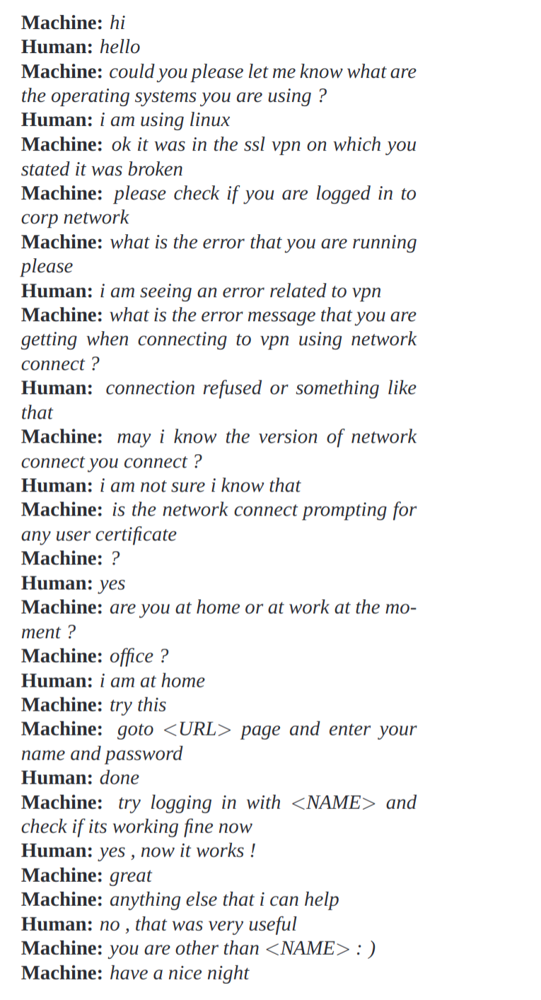
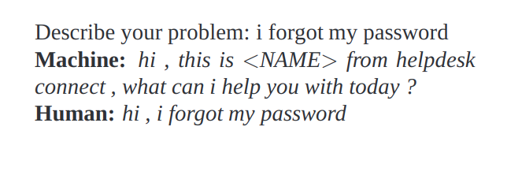
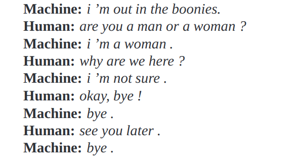

一个神经会话模型
会话建模是自然语言理解和机器智能的重要任务。尽管以前的方法不适用，但它们通常仅限于特定的领域（例如预订机票）并需要手工制定的规则。在本文中，我们提出了一个简单的方法来完成这个任务，它使用最近提出的序列来排序框架。我们的模型通过预测下一句句子来交谈前面的句子或对话中的句子。我们的模型的优势在于它可以进行端对端培训，因此需要的手工规则少得多。我们发现这个直接前向模型可以产生一个简单的对话，给出一个大型的对话训练数据集。我们的初步结果表明，尽管优化错误的目标函数，模型能够很好地交流。它可以从领域特定数据集中提取知识，也可以从电影字幕的大型，嘈杂和普通的主要数据集中提取知识。在特定领域的IT帮助台数据集上，该模型可以通过对话找到技术问题的解决方案。在嘈杂的开放域电影副本数据集上，该模型可以执行简单形式的普通意义推理。正如预期的那样，我们也认为缺乏一致性是我们模型的常见失败模式。
1 介绍
神经网络的端到端训练的进展已经在许多领域取得了显着的进步，如语音识别，计算机视觉和语言处理。最近的研究表明神经网络不仅可以做简单分类，还可以用来绘制复杂 结构到其他复杂结构。 其中一个例子是将一个序列映射到直接应用于自然语言理解的其他序列（Sutskever et al。，2014）。 这个框架的主要优点是它只需要很少的特征工程和领域特异性，同时匹配或超越最先进的结果。 在我们的观点中，这种进步使得研究人员能够处理领域知识可能不易获得的任务，或者对于那些难以手动设计规则的任务。
会话建模可以直接受益于这种模拟，因为它需要查询和响应之间的映射。 由于这种映射的复杂性，转换建模以前被设计为非常狭窄的领域，主要是特征工程。 在这项工作中，我们试验了对话建模任务，将其转换为预测下一个序列的任务，给定以前的序列或使用循环网络的序列（Sutskever et al。，2014）。 我们发现这种方法在生成流畅而准确的对话答复方面可以做得非常出色。
我们在来自IT帮助台对话数据集的聊天会话中测试模型，并发现该模型可以有时跟踪问题并为用户提供有用的答案。 我们还试验了从嘈杂的电影字幕数据集中获得的对话，并发现模型可以进行自然对话并且有时执行简单形式的常识推理。 在这两种情况下，与n-gram模型相比，经常性网络获得更好的困惑并捕获重要的远程相关性。 从定性的角度来看，我们的模型有时能够产生自然的对话
2 相关工作
我们的方法是基于最近的一项工作，即利用神经网络将序列映射到序列(Kalchbrenner & Blunsom,2013;Sutskever et al.,2014;Bahdanau et al.,2014)。 该框架已被用于神经机器翻译，并从WMT’14数据集(Luong et al.,2014;Jean et al.,2014)获得英法和英德翻译任务的改进。 已被用于其他任务，如解析(Vinyals et al.,2014a)和图像字幕(Vinyals et al.,2014b)。由于众所周知香草RNN遭受消失梯度的影响，大多数研究人员使用LongShort Term Memory（LSTM ）循环神经网络(Hochreiter & Schmidhuber,1997)。
我们的工作也受到近来神经语言建模的成功启发(Bengio et al.,2003;Mikolov et al.,2010;Mikolov,2012)，这表明循环神经网络是相当有效的自然语言模型。最近更多由Sordoni等人工作。(Sordoni et al.,2015)和Shang等人工作(Shang et al.,2015)，使用回归神经网络来建立短对话模型中的对话（训练过Twitter式聊天）
过去几十年来，许多研究人员一直在寻找构建机器人和会话代理的方法，并且在本文的范围之外提供了详尽的参考文献列表。然而，这些系统中的大多数需要很多阶段的相当复杂的处理流程(Lesteret al.,2004;Will,2007;Jurafsky & Martin,2009)。 我们的工作不同于传统的系统，通过对缺乏领域知识的问题提出端到端的方法。 原则上，它可以与其他系统相结合来重新评估一系列可以做出答复的答案，但是我们的工作是基于通过训练最大化给定答案概率的概率模型产生的信息。
3 模型
们的方法利用（Sutskever et al.,2014）中描述的序列到序列（seq2seq）框架。该模型基于循环神经网络，该网络每次读取一个记号的输入序列，并预测输出序列， 一次也是一个令牌。 在训练期间，真实的输出序列被赋予模型，所以学习可以通过反向传播完成。 训练该模型以最大化正确序列的交叉熵。 在推断过程中，假设没有观察到真实的输出序列，我们只需输入预测的输出值作为输入来预测下一个输出。 这是一种“贪婪”的推理方法。 一种不太贪心的方法是将光束搜索放在一边，并在前面的步骤中向几个候选者提供下一步。 预测序列可以根据序列的概率进行选择。
具体来说，假设我们观察两次谈话：第一个人发出“ABC”，第二个人发出“WXYZ”。 我们可以使用循环神经网络，并训练将“ABC”映射为“WXYZ”，如图1所示。 当它接收到序列符号“<eos>”的末端时，模型的隐藏状态可以被视为思维向量，因为它存储了句子或思想“ABC”的信息。
这个模型的优势在于它的简单性和普遍性。 我们可以将此模型用于机器翻译，问答/回答以及在架构上没有重大更改的对话。 将这种技术应用到对话建模中也很简单：输入序列可以是迄今为止已转换的内容（上下文）和输出序列的结合。
然而，与简单的翻译任务不同的是，模式化的序列到序列不能成功地“解决”由于几个明显的简化而导致的对话建模问题：被优化的目标函数不能捕捉通过人类交流实现的实际目标 ，这通常是长寿命的并且基于信息交换而不是下一步预测。 缺乏确保一致性和一般世界知识的模型是纯粹无监督模型的另一个明显限制。
4 数据集
在我们的实验中，我们使用了两个数据集：一个封闭域IT帮助台故障诊断数据集和一个开放域电影抄本数据集。 以下是两个数据集区域的详细信息。
4.1 IT帮助台故障诊断数据集
在我们的第一组实验中，我们使用了一个从IT服务台故障排除聊天服务中提取的数据集。在这项服务中，服务人员面临与计算机相关的问题，而专家通过交谈和走路解决方案帮助他们。 典型的交互（或线程）为400字，交替显示信号。 我们的训练集包含30M令牌，3M令牌用作验证。 剩余的执行了一些清理工作，例如删除常用名称，数字和完整URL。
4.2 开放域电影抄本数据集
我们还在开放式字幕数据库（Tiedemann，2009）上测试了我们的模型。这个数据集由XML格式的电影会话组成。它包含了电影中字符发出的句子。我们采用简单的处理步骤去除XML标签和明显的非对话来自数据集的文本（例如，超链接）。由于轮流回答没有明确指出，我们假设他们是由不同的角色说出的，所以我们处理了相关句子。我们训练了我们的模型来预测前一个句子，并且我们做了这个前面的句子（注意，这使得我们的数据集大小加倍，因为每个句子既用于上下文也用作目标）。我们的训练和验证拆分有62M个句子（ 923Mtokens）作为训练样例，验证集有26M个句子（395M令牌）。拆分是这样完成的，即一对句子中的每个句子或者在训练集或测试集中出现，但不是两者都出现。不喜欢以前的数据集，开放式字幕数据库是相当大的，而且含有很多噪音，因为连续的句子可能会被相同的字符发出。鉴于电影的广泛范围，这是一个开放域对话数据集，与技术故障排除数据集形成对比。
5 实验
在本节中，我们用两个数据集描述实验结果，并用我们训练的系统显示一些交互样本。 我们还将我们的系统与基于流行规则的机器人（CleverBot1）的性能进行了比较，这些人使用人类评估对200个问题进行评估。
5.1 IT帮助台故障诊断实验
在这个实验中，我们使用随机梯度下降和渐变剪裁，训练了一个单层LSTM和1024个存储单元。 词汇由最常见的20K字组成，其中包括表示转身和演员的特殊标记。
在收敛时，这个模型达到了8的困惑，而n-gram模型达到了18。 以下是几个最常见的IT问题（远程访问，软件故障和密码问题）的几个模拟故障排除会话。 在这些对话中，Machineis是我们的神经会话模型，而Human则是与之互动的人类演员
对话1：VPN问题
描述问题: 我访问vpn遇到问题

对话2：VPN问题
描述问题: 浏览器一直崩溃

对话3：密码问题
描述问题: 我忘了我的密码

5.2 开放域电影抄本实验
在这个实验中，我们使用梯度裁剪的AdaGrad训练了一个双层LSTM。 LSTM的每一层都有4096个存储单元，我们建立了一个由最常见的100K字组成的词汇表。 为了加速soft-max，我们将存储单元投影到2048个线性单元，以便将信息馈送给分类器。
在收敛时，验证集合上的循环模型的困惑是17分。我们平滑的5-gram模型实现了28分的困惑。有趣的是，增加（Bahdanau等，2014）的软注意机制并没有显着地改善，不论是培训还是验证都很困惑。
5.2.1 模型样本
除了困惑性测量之外，我们的简单循环模型经常会产生合理的答案。 下面是几个问答模板的例子，它们让我们在电影中开启字幕的大噪音但庞大的数据集上进行训练时，能够理解模型的能力。再次，在这些对话中，Machineis是我们的神经会话模型，Human是与之交互的人类演员。
对话1：基本对话


对话2：简单的问答（上下文和多项选择）
对话3：普通知识问答
对话4：哲学知识问答
对话5：道德问题
对话6：意见（注意模型输出“他”，“她”或“它”取决于被问问题）
我们感到鼓舞的是，该模型可以记住事实，理解上下文，在传统管道中没有复杂性的情况下执行常识推理。 我们认为模型是这样做的，除了单词向量中的参数之外没有任何显式的知识表示组件。
也许最具有实际意义的是这样一个事实，即模型可以概括出新的问题。 换句话说，它不会简单地通过将问题与现有数据库进行匹配来查找答案。 事实上，除了第一次会话之外，上面提出的大多数问题都没有出现在训练集中。
尽管如此，这个基本模型的一个缺点是，它只能给我们的问题提供简单，简短，有时不令人满意的答案，如上所述。 也许更有问题的缺点是该模型没有捕捉到一致的个性。 事实上，如果我们提出的问题不是完全相同但在语义上相似的问题，答案有时会不一致。 这是由于我们的模型和我们的实验中的数据集的简单性所期望的。 下面的转换说明了这种失败。
对话7：工作和个性
最后，作为比较基于规则的其他传统机器人，我们提供了CleverBot在我们的测试中的一些问题的输出
5.2.2 人的评测
为了公平客观地比较我们模式最佳的CleverBot，我们挑选了200个问题3，并要求四个不同的人对我们的模型（NCM）与Cle-verBot（CB）进行评分。 要求人类法官挑选他们喜欢的两种机器人中的哪一种，并且如果两种答案的质量相同，也可以对领带进行解密。
如果四位人类法官中有三位同意，我们会记录那个分数。 我们的模型在200个问题中有97个被优先考虑，而CleverBot在200个中被挑选出来60个。其中20个问题有共识，23个问题中评委有不同意见。
下面是一些评委如何评价系统的样本（粗体显示他们的首选答案，第三个例子显示一条平局，第四个例子显示了解答）
然而，我们认为，它仍然是一个开放的研究问题，即设计一个衡量对话模型质量的好指标。 我们通过手动检测，通过使用Mechanical Turk来获得与基于规则的机器人相比较的人体评估以及计算困惑。 但是，使用这些方法存在明显的缺点，并且我们正在积极寻求这种和其他研究方向。
6 讨论
在本文中，我们表明基于这些q2seq框架的简单语言模型可以用来训练对话引擎。 我们的适度结果表明，它可以生成简单和基本的对话，并从嘈杂但开放的域数据集中提取知识。 尽管模型具有明显的局限性，但我们惊奇地发现，没有任何规则的，以数据驱动的方法可以为许多类型的问题提供适当的答案。 但是，该模型可能需要进行重大修改才能传递现实的对话。 在许多限制中，缺乏连贯的个性使我们的系统很难通过图灵测试（Turing，1950）。